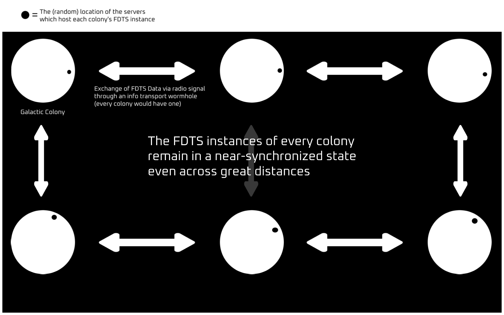

The Federated Digital Town Square (FDTS) would exist in the future, and because technology has been advancing rapidly in the past few decades, we don't know how exactly data of FDTS will be stored and transmitted, however, we presume that some type of supercomputers will be used to store and transmit all FDTS data/information.
Data Transmission/Synchronization
Because the speed of light would slow down data synchronization between FDTS instances so much that the FDTS idea would basically become useless, radio signals (or optical laser signals) are sent through wormholes, kept stable via negative energy. Each galactic colony would have a data transmission wormhole for radio signals to be sent through. The use of wormholes makes data synchronization between all FDTS instances insanely faster, as the distance that the radio signals have to travel is greatly reduced.
The image below may help you visualize how this system would work, however, the image is not 100% accurate and the FDTS data synchronization system wouldn't be set up exactly like this.

Location of FDTS Servers
The physical location of the FDTS servers which host FDTS data (posts, images, videos, livestreams, etc), would likely be on a planet in every galactic colony. These servers could also be in orbit around a planet or other celestial body, however, it may be more ideal to have these servers placed on the surfaces of planets. Wherever the servers are located, they would have to be stationed relatively close to the data transmission wormhole so that the radio signal does not take long to reach the wormhole entry. Keep in mind that radio signals might not even be utilized at all - some future form of data transmission could be utilized, but because we don't know what that "future form" is, we'll just use radio signals or optical laser communication as an example.
Additional apps and services
Though FDTS would be the primary feature/offering on this federated server system, an internet-like system (like today's internet) would be utilized as well (FDTS would be hosted on this internet-like system). This means that people can create their own websites/apps/services similar to FDTS by using the FDTS data synchronization system and servers. Essentially, it would be like today's internet, centered around FDTS, available galaxy-wide.